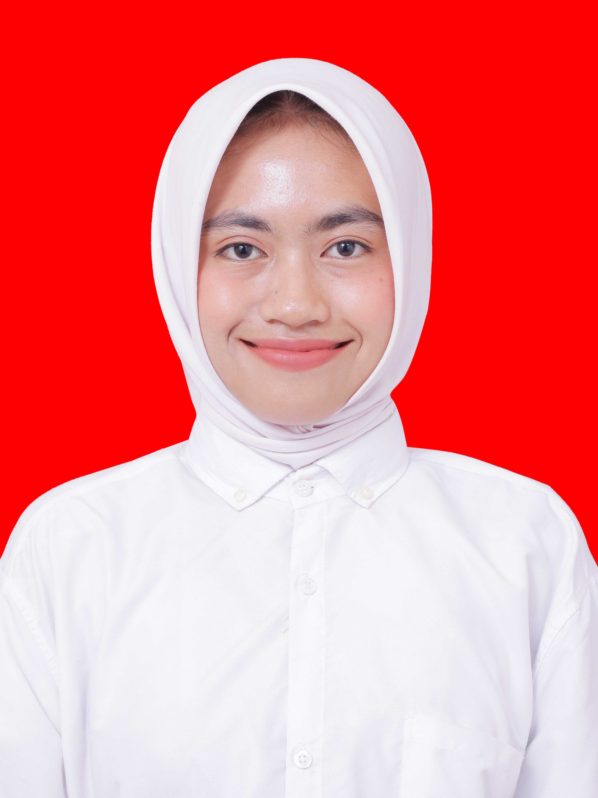

083150496294 || novitaarianti691@gmail.com || Jl. Kelayan BGg. Ampalam
Saya Novita Arianti lulusan SMKN 3 Banjarmasin jurusan Akuntansi Keuangan Lembaga. Saya orang yang cekatan, disiplin, bertanggung jawab dan antusias dengan hal-hal baru. Saya mampu bekerja secara individu maupun dalam tim dan termotivasi untuk terus mengembangkan kemampuan untuk tumbuh secara Professional.
SMKN 3 Banjarmasin - Akuntansi dan Keuangan Lembaga 2022-2025
Praktik Kerja Lapangan | PT. Cpita Sarana Cendekia
Oktober 2024 - Desember 2024
Praktik Kerja Lapangan | Puskesmas
Januari 2025 - Maret 2025